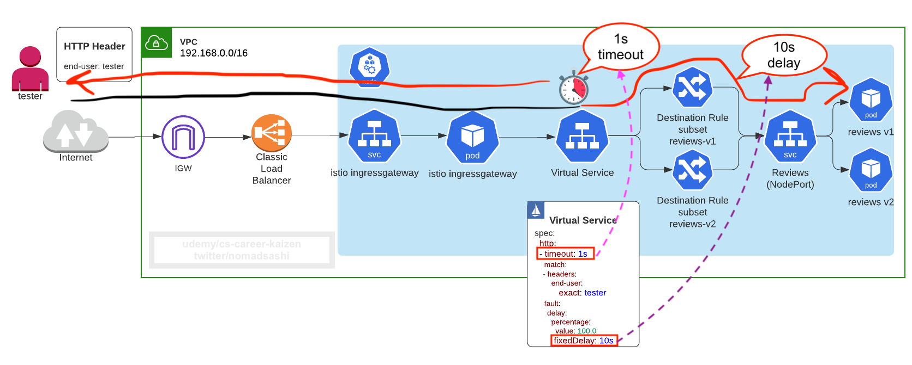
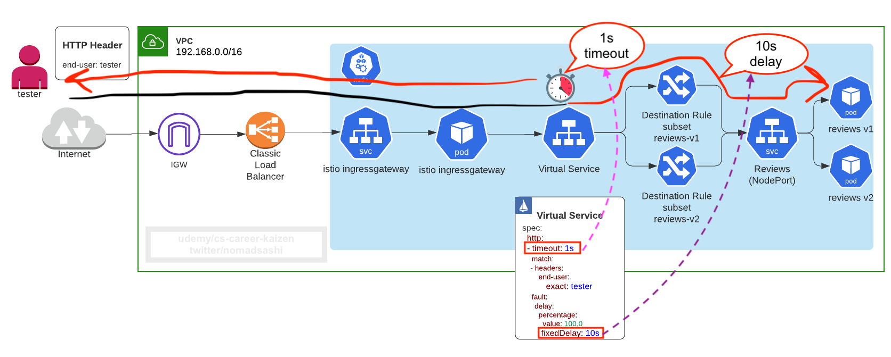

1. Why Istio
Ref: https://istio.io/blog/2020/tradewinds-2020/
Service mesh requirements can be thought of as a typical API gateway functionality, but instead of having just one API gateway, consider each sidecar Envoy proxies acting as API gateway:
Benefits:
Traffic Management
- Control Ingress Traffic using Gateway, VirtualService, DestinationRules

Load balancing

Service Entry
Provides the ability to manually define endpoints that cannot be auto-discovered and may represent destinations outside of the mesh (location: MESH_EXTERNAL).
Request Routing
Fine-grained control of traffic behavior with rich routing rules, retries, failovers, and fault injection
- TLS termination

Canary rollouts

Identity/header based routing
Failure recovery (delay, abort, retries, timeout)

 


Mirror live traffic
Rate limiting
Circuit breaker
Control egress traffic
Security
- transparently secure traffic behind the firewall (Auto mutual TLS among backend services, which doubles the latency at max or max 10ms, also explained in Istio best practice blog)


End-to-end authentication and authorization using JWT

Observability
- Debug the latency in the overall architecture

- Automatic metrics, logs, and traces for all traffic within a cluster, including cluster ingress and egress

- Raw telemetry data are sent from envoy proxy to Mixer, which Mixer processes into metrics, traces, and other telemetry
-
New in istio 1.5 and 1.6
- Reduced installation and configuration complexity by moving control plane components into a single component: Istiod. This binary includes the features of Pilot, Citadel, Galley, and the sidecar injector
- High performant (Istio Performance Benchmarking and script, egress gateway performance testing)


-
Refs: